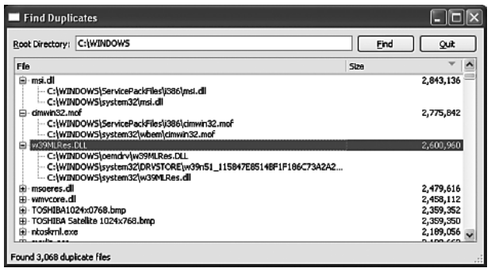

Обработка разделяемых данных
Если количество подлежащих обработке элементов велико и их размеры сильно различаются, так что мы заранее не знаем, как равномерно распределить их между потоками для достижения максимальной пропускной способности, то будет лучше воспользоваться разделяемой очередью работ. В ряде случаев мы можем сначала поместить в очередь несколько работ и запустить фиксированное число потоков, которые приступят к обработке, а затем добавлять работы по мере необходимости. Если сделать доступ к очереди работ потокобезопасным (то есть включить какой-то механизм синхронизации), то каждый поток сможет обращаться с очередью как с обычной структурой данных.
Но в этом разделе мы будем иметь дело с несколько иным сценарием: сначала используем вспомогательные потоки для заполнения разделяемой структуры данных (хеша), а затем приложение заполнит модель, которая отобразит находящиеся в хеше данные с помощью представления.
Мы разработаем приложение Find Duplicates (findduplicates), показанное на рисунке ниже. Оно будет искать в указанном пользователем каталоге и его подкаталогах файлы-дубликаты. Кстати, как и в приложении Image2Image, рассмотренном в предыдущей статье, со строкой редактирования, где пользователь вводит имя начального каталога, ассоциирован объект QCompleter, который выводит список подходящих каталогов, – чтобы пользователю не надо было вводить имя целиком.
Дубликаты определяются по совпадению размеров файлов и их MD5-сумм. MD5 (алгоритм Message-Digest версии 5) – это криптографическая функция, которая получает на входе блок данных (например, файл) и возвращает 128-разрядную (16 байт) свертку. Если размеры и MD5-суммы двух файлов одинаковы, то с высокой вероятностью одинаково и их содержимое.
Приложение обходит все каталоги и заполняет хеш QHash<QPair<QByte Array, qint64>, QStringList>. В качестве ключа хеша выступает пара, состоящая из массива байтов – MD5-суммы – и числа типа qint64 – размера файла, а значением является список строк QStringList, содержащий полные пути к файлам с данной MD5-сверткой и размером. Далее мы можем обойти заполненный хеш и посмотреть, в каких записях список содержит более одной строки, – это и будут файлы-дубликаты. Одно из достоинств такого подхода заключается в том, что мы находим файлы-дубликаты, даже если их имена различаются. (См., например, строку с именем w39MLRes.DLL на рисунке)

Приложение Find Duplicates
Вычисление MD5-суммы файла – потенциально дорогостоящая операция (время ее выполнения пропорционально размеру файла), поэтому мы хотели бы распределить работу между одним или несколькими вспомогательными потоками (их число равно идеальному для данной машины количеству потоков, полученному от Qt). Но зачем вообще вычислять сумму, если можно в массиве QByteArray, являющемся частью ключа, хранить все содержимое файла, тем более что для вычисления свертки файл все равно придется прочитать? Но если так поступить, то ключи хеша займут столько же памяти, сколько все содержимое каталога (быть может, десятки, сотни мегабайтов, а то и больше), тогда как MD5-сумма занимает всего 16 байт вне зависимости от размера файла.
Приложение должно знать, какие файлы ему предстоит обработать (то есть вычислить сумму и затем поместить в хеш). Мы решили создать список подкаталогов указанного пользователем каталога и по возможности равномерно распределить его между вспомогательными потоками. Далее каждый поток должен будет помещать в хеш записи для всех обработанных им файлов. Это не гарантирует справедливого распределения работы – например, одному из потоков может достаться каталог, содержащий только крохотные пиктограммы, а другому – каталог с кучей музыкальных файлов или образов DVD.
Чтобы гарантировать справедливое распределение работы, мы могли бы поступить следующим образом: создать структуру данных, содержащую все файлы, например отображение QMap<qint64, QString> с размером файла в качестве ключа и именем в качестве значения; тогда записи словаря оказались бы внутренне упорядочены по размеру файла. После этого нужно было бы распределить файлы по потокам в соответствии с размерами. Например, если есть три потока и двадцать файлов, то работу нужно было бы распределить так: поток 1 – [0, 3, 6, 9, 12, 15, 18]; поток 2 – [1, 4, 7, 10, 13, 16, 19]; поток 3 – [2, 5, 8, 11, 14, 17] (мы указываем индексы записей в отображении, хотя на практике воспользовались бы итератором). Сложность программы увеличилась бы при этом не сильно, но недостаток такого решения по сравнению с теоретически несправедливым заключается в том, что общее время работы может увеличиться, а уж памяти наверняка потребуется больше. И дело тут в дополнительных затратах на предварительное построение потенциально очень длинного списка файлов (даже если распределить эту работу по нескольким потокам) по сравнению с простым назначением каждому потоку своего каталога. Было бы любопытно сравнить оба решения на практике, но это мы оставим в качестве упражнения читателю.
Понятно, что в основе приложения лежит разделяемый хеш, который могут обновлять все вспомогательные потоки. Сделать полноценный потокобезопасный хеш – нетривиальная задача, поэтому мы решили создать урезанный хеш, предоставляющий необходимую программе функциональность, и опустить массу полезных, но не нужных нам возможностей.
Начнем с рассмотрения упрощенного до предела класса ThreadSafeHash. Затем ознакомимся со структурой главного окна и с подклассом QThread, в котором и происходит вся обработка.
Ниже приведено объявление класса ThreadSafeHash, его методы мы рассмотрим чуть позже.
template<typename Key, typename Value>
class ThreadSafeHash
{
public:
explicit ThreadSafeHash() {}
···
private:
mutable QReadWriteLock lock;
QMultiHash<Key, Value> hash;
};
Разница между классами QMultiHash и QHash (а также между QMultiMap и QMap) заключается в том, что в первом случае с каждым ключом может быть связано несколько значений, а во втором – только одно. Иными словами, с ключом ассоциирован список значений. Это влечет за собой тонкие семантические отличия, которые нужно иметь в виду при работе с классами QMultiHash и QMultiMap. (На самом деле в классах QHash и QMap имеется метод insertMulti(), который позволяет сохранить несколько значений для одного ключа, но использование QMultiHash и QMultiMap в случаях типа нашего удобнее.)
Мы воспользовались классом QReadWriteLock, чтобы минимизировать время ожидания блокировки, – например, если нет активных блокировок записи, то блокировку чтения может получить любое количество потоков. Переменная-член lock должна быть объявлена как mutable, потому что она используется в константных методах.
QList<Value> values(const Key &key) const
{
QReadLocker locker(&lock);
return hash.values(key);
}
Этот метод возвращает значения, соответствующие указанному ключу, или пустой список, если этот ключ отсутствует в хеше.
Конструктор QReadLocker блокирует выполнение, пока не сможет получить блокировку чтения для переданного ему объекта QReadWriteLock. При уничтожении объекта QReadLocker его деструктор снимает блокировку. Тем самым гарантируется, что блокировка обязательно будет снята, – неважно, произойдет ли выход из функции, в которой объявлен объект QReadLocker, нормально или в результате необработанного исключения.
В программе Find Duplicates ключи имеют тип QPair<QByteArray, qint64>, а значения – тип QString, поэтому данный метод возвращает список типа QList<QString> (быть может, пустой).
Тип QList<QString> совместим с типом QStringList – производным от QList, – но не содержит некоторых вспомогательных методов, имеющихся в QStringList. При необходимости можно легко преобразовать QList<QString> в QStringList и получить недостающие методы, потому что имеется конструктор QStringList, принимающий аргумент типа QList<QString>.
В классе ThreadSafeHash есть еще несколько методов с аналогичной структурой, в которых создается объект QReadLocker, а затем возвращается результат обращения к методу агрегированного хеша. К их числу относятся методы contains(), count() и isEmpty() (не показаны).
void insert(const Key &key, const Value &value)
{
QWriteLocker locker(&lock);
hash.insert(key, value);
}
Этот метод вставляет в хеш одно значение с указанным ключом. Если в хеше оказывается несколько значений с одинаковым ключом, то они хранятся в порядке вставки. Если в хеше еще нет значения с таким ключом, то создается новый элемент с указанными ключом и значением.
Конструктор QWriteLocker блокирует выполнение, пока не получит блокировку записи для переданного ему объекта QReadWriteLock. При уничтожении объекта QWriteLocker его деструктор снимает блокировку – точно так же, как в случае QReadLocker.
const QList<Value> takeOne(bool *more)
{
Q_ASSERT(more);
QWriteLocker locker(&lock);
typename QMultiHash<Key, Value>::const_iterator i =
hash.constBegin();
if (i == hash.constEnd()) {
*more = false;
return QList<Value>();
}
*more = true;
const QList<Value> values = hash.values(i.key());
hash.remove(i.key());
return values;
}
Реализация потокобезопасного механизма обхода – непростое занятие, поэтому мы решили вместо этого написать метод, который удаляет элементы из хеша, поскольку для нужд приложения Find Duplicates этого достаточно.
Сначала мы захватываем блокировку записи, так как планируем изменять хеш. Нас не интересует какой-то определенный элемент (устроит любой), но нужно придумать способ получить этот элемент. Мы решили просто взять константный итератор, указывающий на «первый» элемент хеша. (Мы пишем «первый» в кавычках, потому что, в отличие от QMap, контейнеры QHash и QMultiHash не упорядочены.) К сожалению, простое объявление итератора не нравится некоторым компиляторам, поэтому мы были вынуждены добавить ключевое слово typename, чтобы ясно выразить свои намерения.
Если этот итератор указывает на позицию за концом хеша, значит, хеш пуст. В таком случае мы присваиваем булевой переменной, на которую указывает аргумент more, значение false и возвращаем пустой список значений.
Если же хеш не пуст, то мы записываем в more значение true и получаем список значений для элемента, на который указывает ключ, хранящийся в итераторе. (Мы не можем написать i.value(), так как этот метод возвращает единственное значение, а именно, первое в списке.)
Получив копию списка значений, мы удаляем найденный элемент из хеша и возвращаем список. Далее мы увидим, что приложение Find Duplicates вызовет этот метод для заполнения модели после того, как все вспомогательные потоки закончат запись в потокобезопасный хеш. Итак, все относящиеся к делу части класса ThreadSafeHash рассмотрены. Наличие такой структуры данных означает, что вспомогательные потоки могут трактовать объект ThreadSafeHash как обычную структуру данных, не заботясь о синхронизации доступа.
Теперь мы готовы заняться главным окном приложения и начнем с данных-членов (опуская указатели на модель и виджеты, которые не таят никаких сюрпризов).
volatile bool stopped;
QList<QPointer<GetMD5sThread> > threads;
FilesForMD5 filesForMD5;
Переменная stopped нужна для того, чтобы извещать потоки о необходимости прекратить работу. Хранить список вспомогательных потоков удобно, это станет ясно при рассмотрении методов processDirectories(), finished() и stopThreads(). Подкласс GetMD5sThread класса QThread мы рассмотрим ближе к концу этого раздела. Переменная filesForMD5 – это разделяемый потокобезопасный хеш, который заполняют вспомогательные потоки.
typedef
ThreadSafeHash<QPair<QByteArray, qint64>, QString> FilesForMD5;
Этот typedef мы определили для удобства, чтобы не писать каждый раз громоздкий тип хеша. (Такое использование typedef встречается в этой статье редко. Мы вообще стараемся по возможности избегать использования typedef, чтобы не заставлять читателя запоминать их или возвращаться к месту, где они определены. Однако всячески поощряем их использование в реальных программах).
Типом ключа хеша является QPair, а типом значений в списке, ассоциированным с каждым ключом, – QString.
void MainWindow::find()
{
stopThreads();
rootDirectoryEdit->setEnabled(false);
view->setSortingEnabled(false);
model->clear();
model->setColumnCount(2);
model->setHorizontalHeaderLabels(QStringList() << tr(“File”)
<< tr(“Size”));
findButton->hide();
cancelButton->show();
cancelButton->setEnabled(true);
cancelButton->setFocus();
stopped = false;
prepareToProcess();
}
Этот метод вызывается, когда пользователь нажимает кнопку Find ( Найти ). Сначала мы останавливаем все работающие вспомогательные потоки, затем обновляем пользовательский интерфейс и очищаем модель, чтобы убрать с экрана ранее найденные дубликаты. Чтобы повысить производительность, лучше отключить в представлении сортировку перед тем, как производить крупные изменения. А поскольку операция очистки модели заодно обнуляет счетчики строк и столбцов и стирает заголовки, то их следует восстановить, прежде чем приступать к заполнению модели. В самом конце мы сбрасываем переменную stopped в false, поскольку пользователь еще ничего не прервал, и вызываем метод prepareToProcess(), который сформирует список подлежащих обработке каталогов.
Кстати говоря, мы создали не одну кнопку, меняющую надпись с Find на Cancel и обратно, а две разных, расположив их рядом в компоновщике QHBoxLayout. В любой момент видна только одна кнопка. Это удобно, потому что не приходится менять надпись и можно написать два слота, find() и cancel(), вместо единственного findOrCancel().
Первой командой в методе find() является запуск метода stopThreads(). Его код выглядит так:
const int StopWait = 100;
void MainWindow::stopThreads()
{
stopped = true;
while (threads.count()) {
QMutableListIterator<QPointer<GetMD5sThread> > i(threads);
while (i.hasNext()) {
QPointer<GetMD5sThread> thread = i.next();
if (thread) {
if (thread->wait(StopWait)) {
delete thread;
i.remove();
}
}
else
i.remove();
}
}
Q_ASSERT(threads.isEmpty());
}
Алгоритм этого метода такой же, как метода cleanUp() из примера Cross Fader; его задача – приблизить общее время останова ко времени останова самого медленного потока.
В конце метода find() вызывается метод prepareToProcess(), который должен создать список директорий (только директорий, не файлов!), и запустить процесс их обработки:
void MainWindow::prepareToProcess()
{
statusBar()->showMessage(tr(“Reading files...”));
QStringList directories;
directories << rootDirectoryEdit->text();
QDirIterator i(directories.first());
while (!stopped && i.hasNext()) {
const QString &pathAndFilename = i.next();
const QFileInfo &info = i.fileInfo();
if (info.isDir() &&
!info.isSymLink() &&
i.fileName() != “.” &&
i.fileName() != “..”)
directories << pathAndFilename;
}
if (stopped)
return;
processDirectories(directories);
}
Этот метод строит список подлежащих обработке каталогов. Первым в нем идет каталог, введенный пользователем (корневой), все прочие (если таковые имеются) – подкаталоги корневого каталога. Даже если каталог велик, создание списка не займет много времени и памяти, потому что мы углубляемся только на один уровень. Построив список, мы вызываем метод processDirectories(), который и выполняет основную работу.
Если могут встретиться очень большие каталоги, то, возможно, имеет смысл поместить проверку if (stopped) внутрь цикла, чтобы пользователь мог прервать обработку, если передумает. Или даже завести для построения списка несколько потоков. (Собственно, проверка и так производится на каждой итерации цикла благодаря условию !stopped в его заголовке. Видно, автор запутался в собственном коде. – Прим. перев.)
void MainWindow::processDirectories(const QStringList &directories)
{
const QVector<int> sizes = AQP::chunkSizes(directories.count(),
QThread::idealThreadCount());
int offset = 0;
foreach (const int chunkSize, sizes)
{
QPointer<GetMD5sThread> thread = QPointer<GetMD5sThread>(
new GetMD5sThread(&stopped,
directories.first(),
directories.mid(offset, chunkSize),
&filesForMD5));
threads << thread;
connect(thread, SIGNAL(readOneFile()),
this, SLOT(readOneFile()));
connect(thread, SIGNAL(finished()),
this, SLOT(finished()));
thread->start();
offset += chunkSize;
}
}
Здесь используется тот же алгоритм распределения работы, что и в методах convertFiles() из предыдущих статей (раздел «Функция QtConcurrent::run()»). Конструктору каждого объекта GetMD5sThread передается указатель на переменную stopped (чтобы можно было обнаружить прерывание обработки пользователем), корневой каталог (поскольку его следует пропустить при рекурсии), каталоги, подлежащие обработке, и хеш, который этот поток будет обновлять.
Создав поток GetMD5sThread, мы добавляем его в список потоков. Затем соединяем определенный в этом классе сигнал readOneFile() и унаследованный сигнал finished() со слотами главного окна и запускаем выполнение потока.
void MainWindow::readOneFile()
{
statusBar()->showMessage(tr(“Read %Ln file(s)”,
“”,
filesForMD5.count()));
}
Добавив очередное имя файла в хеш, объект GetMD5sThread генерирует сигнал readOneFile(), с которым соединен этот слот. Поскольку хеш FilesForMD5 потокобезопасен, то мы можем не задумываться о синхронизации доступа к его счетчику; и понятно, что счетчик, возвращаемый методом count(), учитывает вклад всех потоков, поскольку они работают с одним и тем же хешем.
Строго говоря, значение счетчика некорректно, потому что относится только к количеству уникальных пар (MD5, размер), а не к количеству обработанных файлов; последнее может оказаться больше при наличии дубликатов. Тем не менее для нужд индикации хода выполнения этого счетчика достаточно. Это пример компромисса между точностью и эффективностью; иногда на них приходится идти. Здесь нам особая точность не нужна – показанное количество все равно продолжает изменяться, но этого вполне хватает, чтобы убедить пользователя в том, что обработка продолжается. Поэтому не будем тратить ни память, ни время процессора на вычисление абсолютно точного результата.
void MainWindow::finished()
{
foreach (QPointer<GetMD5sThread> thread, threads)
if (thread && thread->isRunning())
return;
processResults();
}
По завершении работы объект GetMD5sThread генерирует сигнал finished() (это поведение он наследует от базового класса QThread). Поскольку потоков может быть несколько, то мы проверяем, есть ли еще работающие. Если есть, то мы ничего не делаем и просто возвращаем управление. А если работающих вспомогательных потоков не осталось, значит, этот слот был вызван последним потоком и мы можем вызывать метод processResults().
void MainWindow::processResults()
{
stopThreads();
qint64 maximumSize;
forever {
bool more;
QStringList files = filesForMD5.takeOne(&more);
if (!more)
break;
if (files.count() < 2)
continue;
addOneResult(files, &maximumSize);
}
updateView(maximumSize);
statusBar()->showMessage(tr(“Found %Ln duplicate file(s)”,
“”,
model->rowCount()));
completed();
}
Этот метод представляет результаты пользователю. Первым делом он вызывает метод stopThreads(), удаляющий все вспомогательные потоки, которые больше не нужны.
Мы сохраняем размер самого большого файла, потому что он понадобится для вычисления необходимой ширины столбца «Size». Упрощенный класс ThreadSafeHash не предоставляет ни итератора, ни какого-либо другого способа доступа к элементам, иначе как по ключам (а способа получить все ключи тоже нет). Все, чем мы располагаем, – это деструктивный метод takeOne(), но его вполне достаточно. Мы входим в бесконечный цикл (макрос forever – то же самое, что while(1)) и пытаемся получить список имен файлов. (Метод ThreadSafeHash::takeOne() возвращает объект типа QList<QString>, но существует объявленный без ключевого слова explicit конструктор QStringList(QList<QString>&), который выполняет нужное преобразование.) Если флаг more равен false, то хеш пуст и мы выходим из цикла. В противном случае при условии, что в списке имен файлов есть по меньшей мере два элемента (то есть хотя бы один дубликат), мы вызываем метод addOneResult(), который помещает в модель эту информацию.
В заключение мы обновляем представление – сортируем его и задаем значения ширины столбцов, сообщаем пользователю, сколько всего обнаружено дубликатов, и вызываем метод completed(), который подготавливает пользовательский интерфейс к очередному поиску.
void MainWindow::addOneResult(const QStringList &files,
qint64 *maximumSize)
{
QFileInfo info(files.first());
if (info.size() > *maximumSize)
*maximumSize = info.size();
QStandardItem *parentItem = model->invisibleRootItem();
QStandardItem *treeItem = new QStandardItem(info.fileName());
QStandardItem *sizeItem = new QStandardItem(
QString(“%L1”).arg(info.size(),
20,
10,
QChar(‘ ‘)));
sizeItem->setTextAlignment(Qt::AlignVCenter|Qt::AlignRight);
parentItem->appendRow(QList<QStandardItem*>() << treeItem
<< sizeItem);
foreach (const QString &filename, files)
treeItem->appendRow(new QStandardItem(
QDir::toNativeSeparators(filename)));
}
Этот метод создает новую строку верхнего уровня, содержащую имя первого файла в списке. В первом элементе строки (то есть в первом столбце) находится имя файла без пути, а во втором элементе (втором столбце) – размер файла (в виде строки). Затем метод добавляет для каждого файла по одной строке, в которой находится только имя файла (с путем). Таким образом, у каждой строки верхнего уровня оказывается по меньшей мере две дочерних строки. Отметим также, что имена файлов в дочерних строках могут не совпадать с именем файла в строке верхнего уровня, поскольку приложение Find Duplicates находит дуб ликаты, не обращая внимания на имена файлов.
Размер файла выводится в виде локализованной строки, но дополняется слева пробелами, чтобы можно было сортировать дерево по размерам файлов (щелкнув по заголовку столбца «Size»); в этом случае подразумеваемая по умолчанию алфавитная сортировка будет работать корректно. И разумеется, мы используем статический метод QDir:: toNativeSeparators(), чтобы выводить разделители компонентов пути в соответствии с платформенными соглашениями.
void MainWindow::updateView(qint64 maximumSize)
{
if (model->rowCount()) {
model->sort(0, Qt::AscendingOrder);
view->expand(model->invisibleRootItem()->child(0)->index());
QFontMetrics fm(font());
int sizeWidth = fm.width(QString(“W%L1W”).arg(maximumSize));
view->setColumnWidth(1, sizeWidth);
sizeWidth += fm.width(“W”);
view->setColumnWidth(0,
view->width() - (sizeWidth +
view->verticalScrollBar()->sizeHint().width()));
}
}
Этот метод вызывается после заполнения модели именами файловдубликатов. Он сортирует модель по имени файла в строке верхнего уровня и раскрывает первый элемент, чтобы показать находящиеся в нем дубликаты. Затем он вычисляет ширину столбца размера, ориентируясь на локализованную строку, содержащую максимальный размер и две буквы W для формирования отступов. Столбцу с именами файлов отводится все оставшееся место за вычетом ширины вертикальной полосы прокрутки и небольшого дополнительного поля.
void MainWindow::completed()
{
view->setSortingEnabled(true);
cancelButton->setEnabled(false);
cancelButton->hide();
findButton->show();
findButton->setEnabled(true);
findButton->setFocus();
rootDirectoryEdit->setEnabled(true);
}
После того как поиск завершен (или прерван), вызывается этот метод, который подготавливает пользовательский интерфейс к следующему поиску. Он также заново активирует возможность сортировки (поскольку все изменения модели уже произведены), чтобы пользователь мог сортировать дерево щелчком по заголовку столбца.
void MainWindow::cancel()
{
stopThreads();
completed();
statusBar()->showMessage(tr(“Canceled”),}
StatusTimeout);
}
Этот слот вызывается, когда пользователь прерывает обработку. Он останавливает все потоки, подготавливает пользовательский интерфейс к следующему поиску и подтверждает прерывание. Но он не очищает модель, так что все найденные к этому моменту дубликаты показываются. Конечно, это поведение легко изменить.
void MainWindow::closeEvent(QCloseEvent *event)
{
stopThreads();
event->accept();
}
Когда пользователь хочет выйти из приложения, мы прежде всего останавливаем все работающие потоки, а затем разрешаем продолжить процедуру завершения.
Итак, мы в достаточной мере ознакомились с инфраструктурой приложения, чтобы понять, как создаются потоки, соединяются их сигналы и производится запуск. Теперь обратимся к классу GetMD5sThread – на удивление простому. Сначала покажем часть его объявления, а затем рассмотрим метод run().
class GetMD5sThread : public QThread
{
Q_OBJECT
public:
explicit GetMD5sThread(volatile bool *stopped,
const QString &root,
const QStringList &directories,
FilesForMD5 *filesForMD5)
: m_stopped(stopped),
m_root(root),
m_directories(directories),
m_filesForMD5(filesForMD5)
{}
signals:
voidreadOneFile();
private:
void run();
...
};
Конструктор принимает аргументы, определяющие работу, которую предстоит выполнить потоку, и сохраняет их в переменных-членах. Мы объявляем только один дополнительный сигнал, потому что сигнал finished() унаследован от класса QThread. Сделав метод run() закрытым, мы предотвращаем наследование классу, а также запрещаем вызывать этот метод для экземпляров (поскольку его разрешено вызывать только из QThread::start()).
void GetMD5sThread::run()
{
foreach (const QString &directory, m_directories) {
QDirIterator::IteratorFlag flag = directory == m_root
? QDirIterator::NoIteratorFlags
: QDirIterator::Subdirectories;
QDirIterator i(directory, flag);
while (i.hasNext())
{
const QString &filename = i.next();
const QFileInfo &info = i.fileInfo();
if (!info.isFile() ||
info.isSymLink() ||
info.size() == 0)
continue;
if (*m_stopped)
return;
QFile file(filename);
if (!file.open(QIODevice::ReadOnly))
continue;
QByteArray md5 = QCryptographicHash::hash(
file.readAll(),
QCryptographicHash::Md5);
if (*m_stopped)
return;
m_filesForMD5->insert(qMakePair(md5, info.size()), filename);
emit readOneFile();
}
}
}
Этот метод – самое сердце приложения, именно в нем происходит вся работа. Поток обходит список переданных ему каталогов и для каждого создает объект QDirIterator, с помощью которого перебирает подлежащие обработке файлы. В начальный список был помещен каталог, указанный пользователем (корневой), и его подкаталоги первого уровня. Следовательно, первым каталогом в первом потоке будет корневой, а его подкаталоги уже находятся в списке, поэтому, если обрабатываемый каталог совпадает с корневым, то рекурсивно спускаться в него не нужно – мы учли это при создании флага QDirIterator.
Мы игнорируем все объекты, не являющиеся файлами, а также файлы нулевой длины (хотя логически все они являются дубликатами друг друга). Файлы, которые мы собираемся обрабатывать, открываются в двоичном режиме, и если метод QFile::open() завершается успешно, то мы читаем все содержимое файла методом QFile::readAll() и передаем его функции QCryptographicHash::hash(), чтобы она вычислила MD5сумму. Затем мы обновляем хеш, для чего создаем (или находим) запись с ключом, который состоит из MD5-суммы и размера текущего файла, и добавляем имя файла в список значений для этого ключа. Глобальная функция qMakePair() используется для создания объектов QPair – в данном случае содержащих пару (QByteArray, qint64). И конечно, беспокоиться о синхронизации доступа не нужно, так как за нас это делает класс ThreadSafeHash.
В заключение мы генерируем сигнал, извещающий о том, что файл прочитан. Поскольку QThread – подкласс QObject, то можно спокойно пользоваться механизмом сигналов и слотов, не прибегая к созданию пользовательских событий или вызову слотов напрямую. (Для обработки соединения сигналов со слотами в другом потоке Qt «за кулисами» применяет механизм событий, но все это делается прозрачно, и нам об этом думать необязательно.)
Отметим, что в двух местах мы проверяем, не прервал ли пользователь обработку, и если это так, немедленно завершаем ее выполнение.
Класс QCryptographicHash появился в версии Qt 4.3. Он может вычислять криптографические свертки с помощью алгоритмов MD5, MD4 и SHA1. Использованный нами статический метод QCryptographicHash::hash() принимает массив QByteArray (возвращенный методом QFile::readAll()) и название алгоритма, а возвращает криптографический хеш в виде массива QByteArray. Можно создать объект класса QCryptographicHash, наполнить его данными с помощью одного из методов addData() (они принимают указатель char* и длину массива или объект QByteArray) и в заключение вызвать метод QCryptographicHash::result() для получения хеша.
На этом мы завершаем рассмотрение приложения Find Duplicates. На его примере мы продемонстрировали, как использовать класс QThread в сочетании с потокобезопасной структурой данных. Чуть более полезной оказалась бы программа, показывающая третий столбец – количество дубликатов для каждого файла, – чтобы, отсортировав по этому столбцу, пользователь мог узнать, у какого файла больше всего дубликатов. Еще одно возможное усовершенствование – возможность удалить файл или – для UNIX-подобных операционных систем – сделать ссылку на файл (то есть удалить дубликат и создать вместо него символическую ссылку на оригинал). Все это оставляем читателю в качестве упражнения.
Вот и подошло к концу обсуждение высокоуровневых классов многопоточной обработки в Qt и класса QThread. В Qt имеется замечательная поддержка многопоточности, но никуда не уйти от того факта, что написание – и особенно сопровождение – многопоточных программ требует гораздо больше умения и внимания, чем однопоточных. Поэтому применять многопоточную обработку следует лишь в тех случаях, когда это действительно необходимо, и с большой осторожностью. Уменьшить риски и получить максимальный выигрыш от многопоточности можно, постаравшись вообще избежать необходимости синхронизации (обрабатывая элементы независимо) или, если без нее не обойтись, инкапсулировав ее в класс, так, чтобы клиенты этого класса не занимались синхронизацией самостоятельно. Применение функций из модуля QtConcurrent, а также класса QRunnable существенно упрощает обработку независимых элементов, не запрещая при этом использовать синхронизацию там, где это необходимо (см., например, класс ThreadSafeErrorInfo, созданный во втором разделе предыдущей главы). Но даже сложность работы с подклассами QThread можно свести к минимуму, если пользоваться потокобезопасными структурами данных, хотя их написание может оказаться непростой задачей, особенно если требуется добиться эффективности и развитой функциональности.